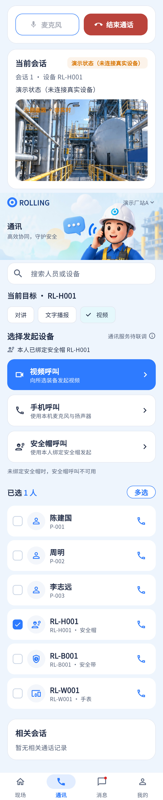

实时视频组件代码存在；全屏、扬声器、通话时长和人物摘要缺失。
相同 · 已有基础
视频区域、当前会话、麦克风、挂断、示例非实时标记已有。
不同 · UI与场景
当前180高占位/16:9实时视图置于长通讯页，设计为独立大画面+时长和三控件。
01 / 先看 UI
两图显示宽度统一；设计390px与当前360逻辑宽的画布不同。各图可独立滚动到底，点击“原图”放大。


使用既有组件截图；业务数据为示例。
02 / 逐项核对功能与小交互
入口：通讯 → 选择装备 → 视频呼叫 · 当前形态：状态
| 编号 | 部位 | 设计要求 | 当前UI | 功能结论 | 下一步 |
|---|---|---|---|---|---|
| 19-01 | 对象摘要 | 姓名、设备、作业、视频标签 | 当前会话设备ID/SN | 部分：缺人/作业组合摘要 | 从真实上下文补齐，不能取登录人作业 |
| 19-02 | 视频画面 | 较大现场画面 | 当前远端AgoraVideoView；未连时静态素材 | 已有代码：远端UID选择、本地等待远端 | 真实远端到达、首帧、断流分别实测 |
| 19-03 | 非实时提示 | 示例画面明确标识 | 已有示例/等待远端标签 | 已有代码 | 保留；等待时最好避免素材像真实监控 |
| 19-04 | 计时 | 通话持续时长 | 当前无 | 缺失 | 与18共用计时逻辑 |
| 19-05 | 麦克风 | 静音切换 | 当前已有连接态控制 | 已有代码 | 样式对齐并验证视频中音频权限 |
| 19-06 | 扬声器 | 免提开关 | 当前无 | 缺失 | 与18统一音频路由 |
| 19-07 | 全屏 | 全屏观看 | 当前无 | 缺失 | 补全屏进入/退出、返回键、横竖屏及远端断开 |
| 19-08 | 挂断 | 明确红色挂断 | 已有矩形结束 | 已有代码 | 保留结束回执，回通讯列表 |
| 19-09 | 异常 | 无视频能力/远端未到/网络中断 | 已有部分状态与占位 | 部分：真实硬件证据不足 | 逐状态验收，不能把示例视频算直播 |
源码依据
communications/communications_page.dart:843,874,910；communications/rtc_engine.dart
链接为随报告保存的带行号快照；行号对应分析时源码。以函数和字段共同定位，不能将请求代码视为执行成功证据。